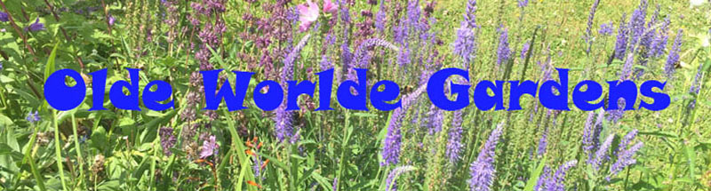
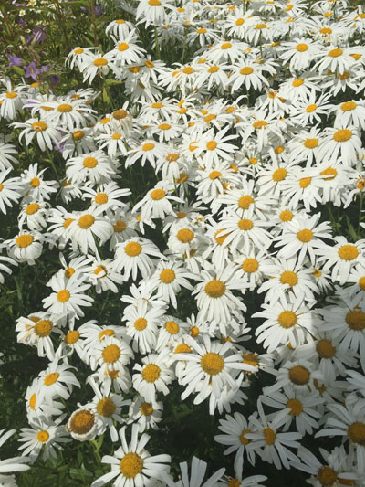
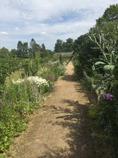
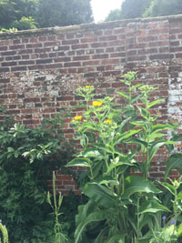

|  | |||
|  |  |  | |
Flowers |
Landscaping |
Walled gardens |
Contact us |
|
Olde Worlde Gardens specialise in preserving plant species from our past. All our stock has been seen in gardens for over 200 years. We use no modern cross pollination techniques to produce the hybrid that are currently taking over our gardens and do not use any genetically modified species. If you wish to experience the plants and gardens of yesteryear, visit our extensive nurseries. |
Web page last updated by: Addo-Nyarko Papa Yaw Danso_GH049_001 |
||